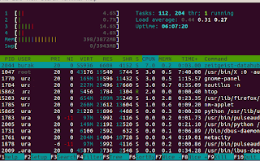

htop
Unix eski "top" komutu sistemdeki süreçleri, ne kadar mikroişlemci
zamanı kullanıldığı gibi raporları ekranda sabitleyip gösteren (akışlı
değil, mesela tail -f gibi -text bazlı ortamda bu iş için curses
gerekiyor doğal olarak-) bir programdı. Fakat biraz renksizdi, ve çok
özelliğe sahip değildi.
Yeni komut htop, tüm çekirdeklerin (çores) yükünü sol üst kısımda canlı olarak aktarır, htop ayrıca hiyerarşik gösterime izin verir ve renklidir. Ubuntu'da kurmak için
sudo apt-get install htop
